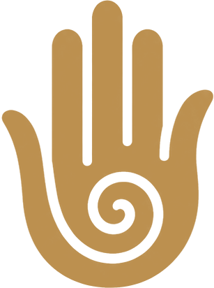

Cantinho de recepção
Poltronas e sofá em tons claros, mesinhas de apoio e luz de leitura para esperar com calma e receber o ritual de boas-vindas.

AgendarNosso espaço
Um ambiente aconchegante, climatizado e silencioso, feito para você desacelerar.
A sala da Josi Relax foi pensada para que você sinta a pausa desde o primeiro minuto. A luz é suave e quente, as cores são claras e naturais, e o ar-condicionado mantém a temperatura agradável em qualquer época do ano.
Plantas, cortinas macias, toalhas e lençóis claros dão ao espaço uma sensação de acolhimento. Pequenos detalhes, como flores frescas, pedras e um abajur com um recado carinhoso, fazem parte do ritual de cada atendimento.
Do momento em que você chega até o fim da sessão, cada canto tem uma função.
Poltronas e sofá em tons claros, mesinhas de apoio e luz de leitura para esperar com calma e receber o ritual de boas-vindas.
Uma bacia de madeira com água morna e pétalas, ao lado das poltronas, para relaxar os pés antes ou durante o atendimento.
Maca confortável com lençóis e manta clara, iluminação baixa, cortinas e ambiente climatizado, para o silêncio e o toque feitos sem pressa.
Toque em uma foto para ver maior.
Quer conhecer o espaço de perto?
Agendar pelo WhatsApp